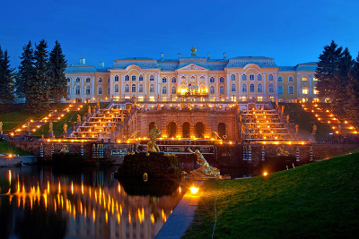
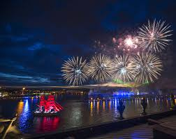
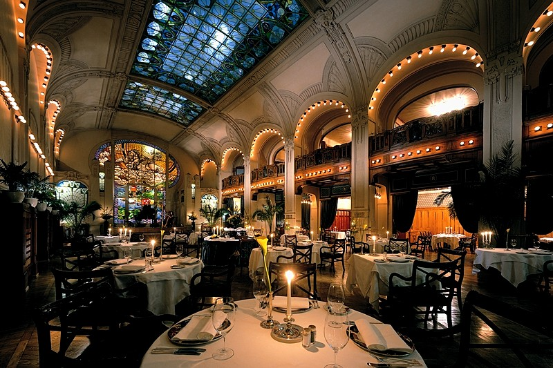
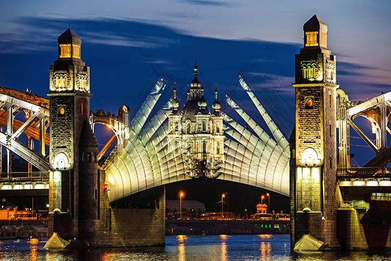

Top 5 landmarks
- The Winter Palace
- The Bronze Horseman
- St Isaac's Cathedral
- Catherine Palace
- Church of the Savior on Spilled Blood
Top 5 festivals
- White Nights Celebration
- Water lantern
- Palaces Of St. Petersburg Music Festival
- Usadba Jazz Festival
- Royal Gardens Of Russia Festival
Top 5 restaurants
- DUO Gastrobar
- ARKA BAR & GRILL
- Bourgeois Bohemians
- Jerome
- Tartarbar
Top 5 leisure
- The Hermitage
- Ballet and Symphony Orchestra
- Waterpark Piterlend
- Murinsky Park
- Mariinsky Concert Hall